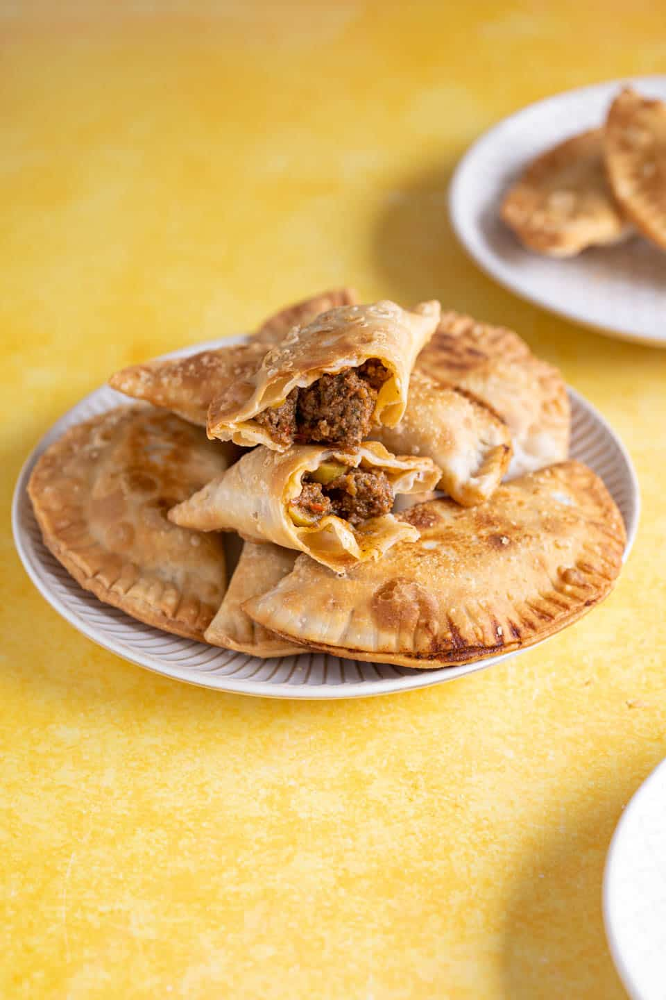

Pastelillos de Carne

Description
Pastelillos de Carne are small turnovers or meat pockets made with thin dough.
We crimp the edges to keep the contents inside while we fry it to give it flakiness and crunchiness.
Ingredients
- 3 tbsp. olive oil
- 1 onion
- 4 cloves of garlic
- 1/4 cup sofrito
- 1 lb. ground beef
- 1 1/2 tsp. adobo
- 2 small potatoes
- 2 bay leaves
- 1/2 cup of water
- 2 tbsp tomato paste